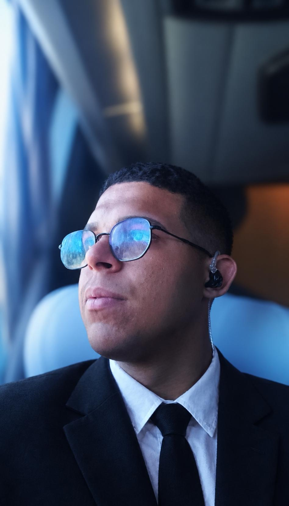

Gustavo Almeida
Desenvolvedor
Participa do desenvolvimento do ENEM Nota Max, trabalhando para transformar ideias em recursos que apoiem a jornada dos estudantes.
@gustavo.almeida.ofcConheça os dois desenvolvedores por trás do projeto. Nosso objetivo é aproximar tecnologia e educação e oferecer ferramentas que apoiem a preparação dos estudantes para o ENEM.

Participa do desenvolvimento do ENEM Nota Max, trabalhando para transformar ideias em recursos que apoiem a jornada dos estudantes.
@gustavo.almeida.ofcFaz parte da equipe responsável pelo desenvolvimento e evolução do ENEM Nota Max.
@max_silveira_2023O ENEM Nota Max reúne recursos para ajudar estudantes a organizar os estudos, revisar conteúdos e se preparar com mais clareza para o exame.